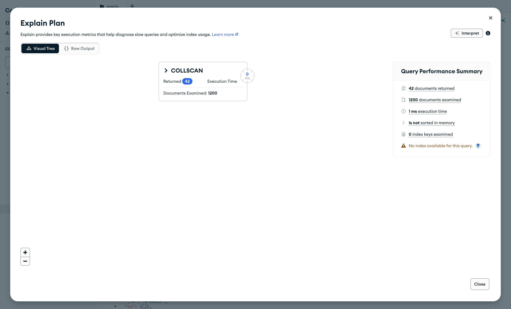
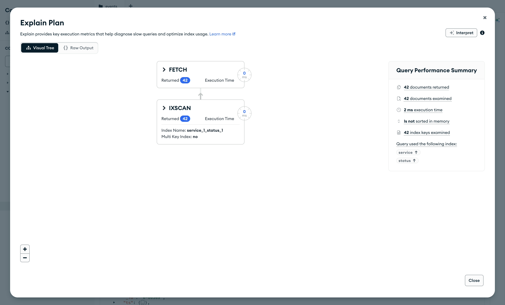
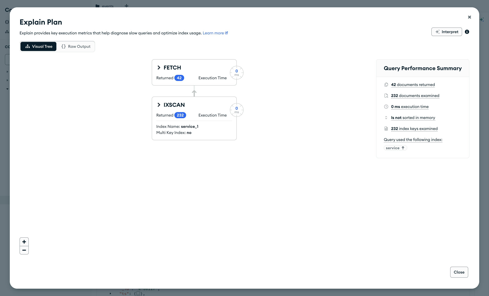
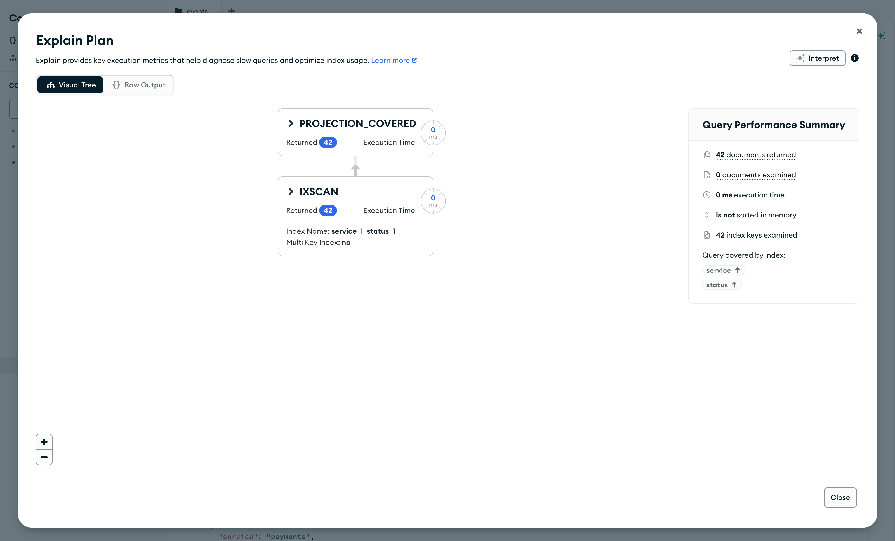
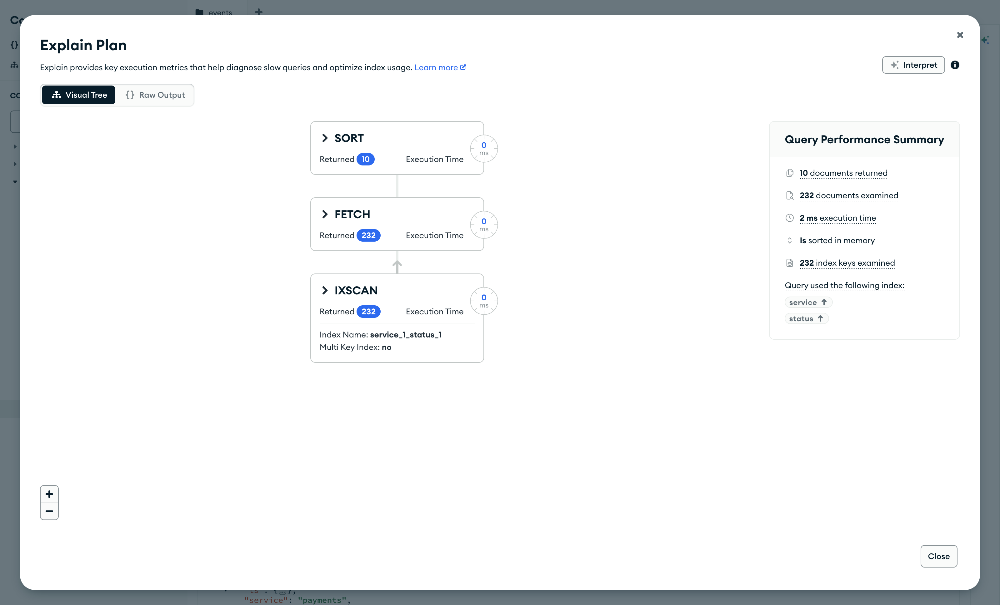
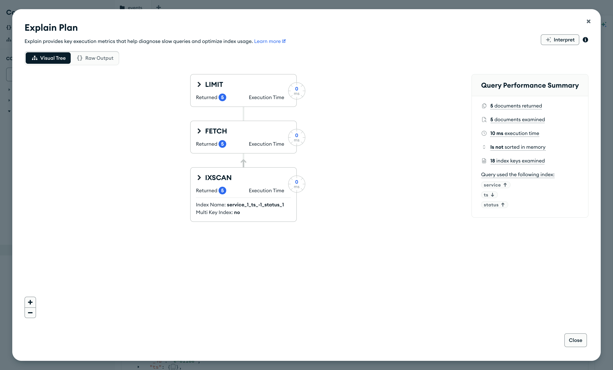
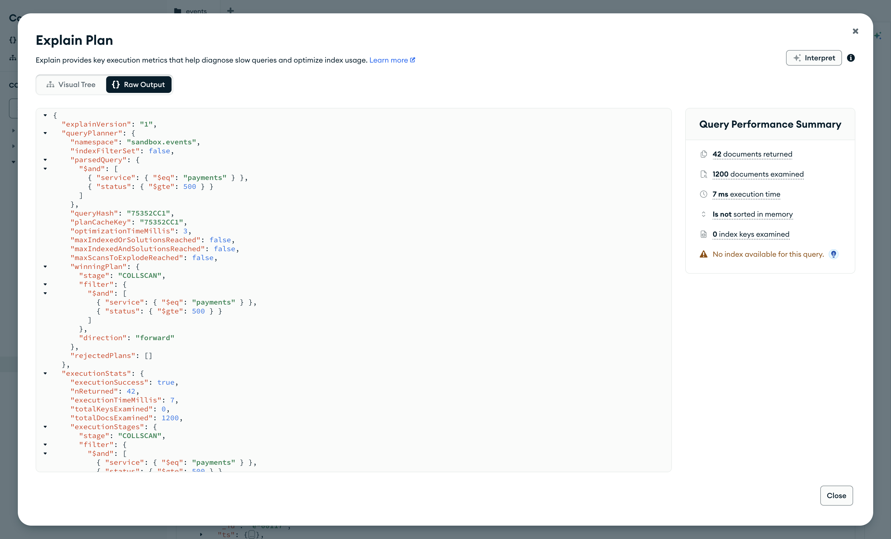

Справочник по MongoDB · модуль 3 · форма данных и скорость
3.3
Как читать explain:
COLLSCAN против IXSCAN
В этой главе разобран документ, который возвращает explain, — отчёт сервера о том, как выполнен запрос. Из раздела queryPlanner видно, какой план сервер выбрал и какие отклонил, из раздела executionStats — сколько ключей индекса и документов он прочитал ради результата. По этим числам сравниваются индексы для одного запроса, находятся сортировка в памяти и лишнее чтение документов, и подбирается порядок полей составного индекса.
- Категория
- Форма данных
- Уровень
- Начальный
- Связанные темы
- Индексы (глава 3.2), проекция (глава 1.5), сортировка и предел (глава 1.6), практикум «Онлайн-разбор запроса»
- Зачем это знать
- Проверять, использует ли запрос индекс и сколько лишнего читает сервер
Как запускать примеры этой главы
docker compose run --rm reset или скрипт из главы 1.0, §6.mongodb-glava-3.3-python.zip, 63 КБmongodb-glava-3.3-ruby.zip, 62 КБmongodb-glava-3.3-go.zip, 68 КБmongodb-glava-3.3-cpp.zip, 67 КБ — все примеры главы готовыми программами, базы и стенд в Docker. В README.md — запуск в Docker, если Compass нет или он не подключается, и на установленном сервере с Compass, а также что должна напечатать каждая программа.lessons/ch3_3.py — пример вставляется в конец файлаlessons/ch3_3.rb — пример вставляется в конец файлаlessons/ch3_3.go — пример внутрь скобок в конце main, функции и типы — выше mainlessons/ch3_3.cpp — пример внутрь скобок в конце main, функции — выше maincd lessons, затем python ch3_3.pycd lessons, затем python3 ch3_3.py · в Docker: docker compose run --rm python lessons/ch3_3.pycd lessons, затем ruby ch3_3.rb · в Docker: docker compose run --rm ruby lessons/ch3_3.rbcd lessons, затем go run ch3_3.go · в Docker: docker compose run --rm go lessons/ch3_3.gocd lessons, затем g++ -std=c++17 ch3_3.cpp -o prog $(pkg-config --cflags --libs libmongocxx1) && ./prog · в Docker: docker compose run --rm cpp lessons/ch3_3.cpp§1Документ explain
В главе 3.2 из плана запроса брались только названия стадий. Сервер сообщает о выполнении запроса гораздо больше: какие планы он рассматривал, какой выбрал, сколько записей индекса и сколько документов прочитал, сколько вернул. Всё это лежит в документе, который возвращает explain — команда «объясни, как выполнен запрос». В подробных режимах отчёта сервер выполняет запрос как обычно, но вместо документов программа получает отчёт о выполнении.
Глава снова работает на копии журнала journal (sandbox.events) из заготовки. Первый пример пересоздаёт копию без индексов, кроме _id_, и запрашивает отчёт по запросу дежурного из главы 3.2: события платёжного сервиса со статусом от 500.
Отчёт возвращает метод курсора explain(): find строит курсор, explain вместо документов возвращает словарь отчёта.
Отчёт возвращает метод explain у результата find; он возвращает хеш отчёта вместо документов.
У курсора Go метода explain нет, поэтому отчёт запрашивается командой сервера explain через RunCommand. Внутри команды — описание запроса в той же форме, в какой его отправляет Find: имя коллекции под ключом find и фильтр под ключом filter. Параметр verbosity задаёт подробность отчёта.
У курсора mongocxx метода explain нет, поэтому отчёт запрашивается командой сервера explain через run_command. Внутри команды — описание запроса: имя коллекции под ключом find и фильтр под ключом filter. Параметр verbosity задаёт подробность отчёта.
journal.drop() journal.insert_many(events.find()) info = journal.find({"service": "payments", "status": {"$gte": 500}}).explain() print("разделы ответа:", list(info)) print("выбранный план:", info["queryPlanner"]["winningPlan"]["stage"]) stats = info["executionStats"] print("nReturned: ", stats["nReturned"]) print("totalKeysExamined:", stats["totalKeysExamined"]) print("totalDocsExamined:", stats["totalDocsExamined"])
journal.drop(); std::vector<bsoncxx::document::value> all; for (auto&& doc : events.find(make_document())) all.emplace_back(doc); journal.insert_many(all); auto info = sandbox.run_command(make_document( kvp("explain", make_document( kvp("find", "events"), kvp("filter", make_document(kvp("service", "payments"), kvp("status", make_document(kvp("$gte", 500))))))), kvp("verbosity", "executionStats"))); std::cout << "разделы ответа:"; for (auto&& field : info.view()) std::cout << " " << field.key(); std::cout << std::endl; std::cout << "выбранный план: " << info.view()["queryPlanner"]["winningPlan"]["stage"].get_string().value << std::endl; auto stats = info.view()["executionStats"]; std::cout << "nReturned: " << stats["nReturned"].get_int32().value << std::endl; std::cout << "totalKeysExamined: " << stats["totalKeysExamined"].get_int32().value << std::endl; std::cout << "totalDocsExamined: " << stats["totalDocsExamined"].get_int32().value << std::endl;
journal.Drop(ctx) var all []bson.D cursor, _ := events.Find(ctx, bson.D{}) cursor.All(ctx, &all) docs := make([]any, len(all)) for i := range all { docs[i] = all[i] } journal.InsertMany(ctx, docs) var info bson.Raw sandbox.RunCommand(ctx, bson.D{ {Key: "explain", Value: bson.D{ {Key: "find", Value: "events"}, {Key: "filter", Value: bson.D{{Key: "service", Value: "payments"}, {Key: "status", Value: bson.D{{Key: "$gte", Value: 500}}}}}}}, {Key: "verbosity", Value: "executionStats"}}).Decode(&info) elements, _ := info.Elements() keys := []string{} for _, el := range elements { keys = append(keys, el.Key()) } fmt.Println("разделы ответа:", keys) fmt.Println("выбранный план:", info.Lookup("queryPlanner", "winningPlan", "stage").StringValue()) stats := info.Lookup("executionStats").Document() fmt.Println("nReturned: ", stats.Lookup("nReturned").AsInt64()) fmt.Println("totalKeysExamined:", stats.Lookup("totalKeysExamined").AsInt64()) fmt.Println("totalDocsExamined:", stats.Lookup("totalDocsExamined").AsInt64())
journal.drop journal.insert_many(events.find.to_a) info = journal.find({ "service" => "payments", "status" => { "$gte" => 500 } }).explain puts "разделы ответа: " + info.keys.to_s puts "выбранный план: " + info["queryPlanner"]["winningPlan"]["stage"] stats = info["executionStats"] puts "nReturned: #{stats["nReturned"]}" puts "totalKeysExamined: #{stats["totalKeysExamined"]}" puts "totalDocsExamined: #{stats["totalDocsExamined"]}"
разделы ответа: ['explainVersion', 'queryPlanner', 'executionStats', 'command', 'serverInfo', 'serverParameters', 'ok'] выбранный план: COLLSCAN nReturned: 42 totalKeysExamined: 0 totalDocsExamined: 1200
разделы ответа: explainVersion queryPlanner executionStats command serverInfo serverParameters ok выбранный план: COLLSCAN nReturned: 42 totalKeysExamined: 0 totalDocsExamined: 1200
разделы ответа: [explainVersion queryPlanner executionStats command serverInfo serverParameters ok] выбранный план: COLLSCAN nReturned: 42 totalKeysExamined: 0 totalDocsExamined: 1200
разделы ответа: ["explainVersion", "queryPlanner", "executionStats", "command", "serverInfo", "serverParameters", "ok"] выбранный план: COLLSCAN nReturned: 42 totalKeysExamined: 0 totalDocsExamined: 1200
В отчёте семь разделов. Для разбора запроса нужны два: queryPlanner — какой план выбран, и executionStats — как он выполнился. Остальные служебные: command повторяет запрос, serverInfo и serverParameters описывают сервер, explainVersion — версию формата отчёта.
Выбранный план — COLLSCAN: индекса под запрос нет. Три числа из executionStats описывают работу сервера:
nReturned— сколько документов вернул запрос: 42;totalKeysExamined— сколько записей индекса прочитано: 0, индекс не использовался;totalDocsExamined— сколько документов прочитано: 1200, вся коллекция.
Ради 42 документов сервер прочитал 1200. Когда прочитано намного больше, чем возвращено, запросу нужен индекс. У запроса, который хорошо обслужен индексом, все три числа близки.
Подробность отчёта задаёт режим. queryPlanner — только выбранный план, запрос не выполняется; executionStats — план и счётчики выполнения; allPlansExecution — то же и счётчики пробного выполнения отклонённых планов. В примерах на Go и C++ режим задан явно, executionStats. Методы курсора в Python и Ruby режим не передают, и сервер выполняет отчёт в режиме allPlansExecution; разделы и счётчики, разобранные здесь, в нём те же.

Окно Explain Plan открывается кнопкой Explain на вкладке Documents и строит отчёт для запроса из поля фильтра. Слева — дерево стадий: одна стадия COLLSCAN, она вернула 42 документа, прочитав 1200 (Documents Examined). Справа — сводка Query Performance Summary: documents returned — nReturned, documents examined — totalDocsExamined, index keys examined — totalKeysExamined, execution time — executionTimeMillis, sorted in memory — есть ли стадия SORT. Предупреждение No index available for this query — индекса под запрос нет.
§2queryPlanner: какой план выбран
Когда под запрос подходит несколько индексов, сервер составляет по плану на каждый, пробует их на начале запроса и оставляет тот, который быстрее дал результат. Выбранный план лежит в queryPlanner.winningPlan, остальные — в списке queryPlanner.rejectedPlans. Выбор сервер запоминает в кэше планов и для следующих запросов той же формы использует его снова.
Чтобы не разбирать отчёт целиком в каждом примере, в заготовке главы объявлена функция summary. Она отправляет команду explain для запроса, описанного её аргументами, и возвращает одной строкой стадии выбранного плана сверху вниз и три счётчика: сколько документов вернул запрос, сколько ключей индекса и сколько документов прочитано. Аргументы — части команды find: filter, sort, projection, limit, hint.
def summary(coll, **find): """План и счётчики explain одной строкой: стадии | вернул | ключей | документов.""" info = coll.database.command("explain", {"find": coll.name, **find}, verbosity="executionStats") stage = info["queryPlanner"]["winningPlan"] stage = stage.get("queryPlan", stage) # MongoDB 7 кладёт план во вложенное поле steps = [] while stage: steps.append(stage["stage"] + (" " + stage["indexName"] if "indexName" in stage else "")) stage = stage.get("inputStage") stats = info["executionStats"] return (" → ".join(steps) + f" | вернул {stats['nReturned']}" + f" | ключей {stats['totalKeysExamined']} | документов {stats['totalDocsExamined']}")
// summary — план и счётчики explain одной строкой: стадии | вернул | ключей | документов. std::string summary(mongocxx::database& db, const std::string& coll, bsoncxx::document::view find) { bsoncxx::builder::basic::document cmd; cmd.append(kvp("find", coll)); for (auto&& field : find) cmd.append(kvp(field.key(), field.get_value())); auto res = db.run_command(make_document(kvp("explain", cmd.view()), kvp("verbosity", "executionStats"))); auto stage = res.view()["queryPlanner"]["winningPlan"].get_document().value; if (stage["queryPlan"]) stage = stage["queryPlan"].get_document().value; // MongoDB 7 кладёт план во вложенное поле std::string steps; while (true) { steps += std::string{stage["stage"].get_string().value}; if (stage["indexName"]) steps += " " + std::string{stage["indexName"].get_string().value}; if (!stage["inputStage"]) break; steps += " → "; stage = stage["inputStage"].get_document().value; } auto stats = res.view()["executionStats"].get_document().value; auto number = [&](const char* name) { auto value = stats[name]; return std::to_string(value.type() == bsoncxx::type::k_int64 ? value.get_int64().value : value.get_int32().value); }; return steps + " | вернул " + number("nReturned") + " | ключей " + number("totalKeysExamined") + " | документов " + number("totalDocsExamined"); }
// summary — план и счётчики explain одной строкой: стадии | вернул | ключей | документов. func summary(coll *mongo.Collection, find bson.D) string { cmd := append(bson.D{{Key: "find", Value: coll.Name()}}, find...) var res bson.Raw coll.Database().RunCommand(context.Background(), bson.D{{Key: "explain", Value: cmd}, {Key: "verbosity", Value: "executionStats"}}).Decode(&res) stage := res.Lookup("queryPlanner", "winningPlan").Document() if inner, ok := stage.Lookup("queryPlan").DocumentOK(); ok { // MongoDB 7 кладёт план во вложенное поле stage = inner } steps := []string{} for { step := stage.Lookup("stage").StringValue() if name, ok := stage.Lookup("indexName").StringValueOK(); ok { step += " " + name } steps = append(steps, step) next, ok := stage.Lookup("inputStage").DocumentOK() if !ok { break } stage = next } stats := res.Lookup("executionStats").Document() return fmt.Sprintf("%s | вернул %d | ключей %d | документов %d", strings.Join(steps, " → "), stats.Lookup("nReturned").AsInt64(), stats.Lookup("totalKeysExamined").AsInt64(), stats.Lookup("totalDocsExamined").AsInt64()) }
# План и счётчики explain одной строкой: стадии | вернул | ключей | документов. def summary(coll, find) info = coll.database.command(explain: { find: coll.name }.merge(find), verbosity: "executionStats").first stage = info["queryPlanner"]["winningPlan"] stage = stage["queryPlan"] || stage # MongoDB 7 кладёт план во вложенное поле steps = [] while stage steps << stage["stage"] + (stage["indexName"] ? " " + stage["indexName"] : "") stage = stage["inputStage"] end stats = info["executionStats"] steps.join(" → ") + " | вернул #{stats["nReturned"]}" + " | ключей #{stats["totalKeysExamined"]} | документов #{stats["totalDocsExamined"]}" end
Пример создаёт два индекса из главы 3.2 — service_1 и service_1_status_1 — и смотрит, какой из них сервер выберет для запроса дежурного. Отклонённые планы перебираются в цикле: у каждого пример спускается по inputStage до нижней стадии и печатает имя её индекса.
journal.create_index("service") journal.create_index([("service", 1), ("status", 1)]) filtr = {"service": "payments", "status": {"$gte": 500}} print("выбран:", summary(journal, filter=filtr)) info = journal.find(filtr).explain() for rejected in info["queryPlanner"]["rejectedPlans"]: stage = rejected.get("queryPlan", rejected) while "inputStage" in stage: stage = stage["inputStage"] print("отклонён план по индексу", stage["indexName"])
journal.create_index(make_document(kvp("service", 1))); journal.create_index(make_document(kvp("service", 1), kvp("status", 1))); auto filtr = make_document(kvp("service", "payments"), kvp("status", make_document(kvp("$gte", 500)))); std::cout << "выбран: " << summary(sandbox, "events", make_document(kvp("filter", filtr.view()))) << std::endl; auto info = sandbox.run_command(make_document( kvp("explain", make_document(kvp("find", "events"), kvp("filter", filtr.view()))), kvp("verbosity", "executionStats"))); for (auto&& plan : info.view()["queryPlanner"]["rejectedPlans"].get_array().value) { auto stage = plan.get_document().value; if (stage["queryPlan"]) stage = stage["queryPlan"].get_document().value; while (stage["inputStage"]) stage = stage["inputStage"].get_document().value; std::cout << "отклонён план по индексу " << stage["indexName"].get_string().value << std::endl; }
journal.Indexes().CreateOne(ctx, mongo.IndexModel{Keys: bson.D{{Key: "service", Value: 1}}}) journal.Indexes().CreateOne(ctx, mongo.IndexModel{Keys: bson.D{{Key: "service", Value: 1}, {Key: "status", Value: 1}}}) filtr := bson.D{{Key: "service", Value: "payments"}, {Key: "status", Value: bson.D{{Key: "$gte", Value: 500}}}} fmt.Println("выбран:", summary(journal, bson.D{{Key: "filter", Value: filtr}})) var info bson.Raw sandbox.RunCommand(ctx, bson.D{ {Key: "explain", Value: bson.D{{Key: "find", Value: "events"}, {Key: "filter", Value: filtr}}}, {Key: "verbosity", Value: "executionStats"}}).Decode(&info) rejected, _ := info.Lookup("queryPlanner", "rejectedPlans").Array().Values() for _, plan := range rejected { stage := plan.Document() if inner, ok := stage.Lookup("queryPlan").DocumentOK(); ok { stage = inner } for { next, ok := stage.Lookup("inputStage").DocumentOK() if !ok { break } stage = next } fmt.Println("отклонён план по индексу", stage.Lookup("indexName").StringValue()) }
journal.indexes.create_one({ "service" => 1 }) journal.indexes.create_one({ "service" => 1, "status" => 1 }) filtr = { "service" => "payments", "status" => { "$gte" => 500 } } puts "выбран: " + summary(journal, filter: filtr) info = journal.find(filtr).explain info["queryPlanner"]["rejectedPlans"].each do |rejected| stage = rejected["queryPlan"] || rejected stage = stage["inputStage"] while stage["inputStage"] puts "отклонён план по индексу " + stage["indexName"] end
выбран: FETCH → IXSCAN service_1_status_1 | вернул 42 | ключей 42 | документов 42 отклонён план по индексу service_1
выбран: FETCH → IXSCAN service_1_status_1 | вернул 42 | ключей 42 | документов 42 отклонён план по индексу service_1
выбран: FETCH → IXSCAN service_1_status_1 | вернул 42 | ключей 42 | документов 42 отклонён план по индексу service_1
выбран: FETCH → IXSCAN service_1_status_1 | вернул 42 | ключей 42 | документов 42 отклонён план по индексу service_1
Выбран план по составному индексу: 42 ключа, 42 документа, 42 результата. План по service_1 отклонён. По нему сервер прочитал бы все 232 события payments и у каждого проверил статус, а по составному индексу читаются только записи со статусом от 500.

service_1 и service_1_status_1Compass показывает только выбранный план: IXSCAN по service_1_status_1 и FETCH, по 42 на каждой стадии. В сводке под строкой Query used the following index — поля индекса со стрелками направления. Отклонённый план по service_1 на схеме не виден; он есть на вкладке Raw Output, в rejectedPlans.
§3executionStats: сколько прочитано
Отклонённый план в executionStats не попадает: счётчики описывают только выбранный. Чтобы увидеть числа другого плана, индекс задают запросу явно параметром hint — «подсказка». Значение — имя индекса или его ключ; специальное значение {"$natural": 1} велит читать коллекцию подряд, без индекса. В рабочих запросах подсказку ставят редко: сервер обычно выбирает план сам. Для сравнения индексов она удобна, потому что задаёт план явно.
Пример выполняет один и тот же запрос дежурного по составному индексу, по индексу service_1 и без индекса.
filtr = {"service": "payments", "status": {"$gte": 500}}
print("service_1_status_1:", summary(journal, filter=filtr, hint="service_1_status_1"))
print("service_1: ", summary(journal, filter=filtr, hint="service_1"))
print("без индекса: ", summary(journal, filter=filtr, hint={"$natural": 1}))
auto filtr = make_document(kvp("service", "payments"), kvp("status", make_document(kvp("$gte", 500)))); std::cout << "service_1_status_1: " << summary(sandbox, "events", make_document(kvp("filter", filtr.view()), kvp("hint", "service_1_status_1"))) << std::endl; std::cout << "service_1: " << summary(sandbox, "events", make_document(kvp("filter", filtr.view()), kvp("hint", "service_1"))) << std::endl; std::cout << "без индекса: " << summary(sandbox, "events", make_document(kvp("filter", filtr.view()), kvp("hint", make_document(kvp("$natural", 1))))) << std::endl;
filtr := bson.D{{Key: "service", Value: "payments"}, {Key: "status", Value: bson.D{{Key: "$gte", Value: 500}}}}
fmt.Println("service_1_status_1:", summary(journal, bson.D{{Key: "filter", Value: filtr}, {Key: "hint", Value: "service_1_status_1"}}))
fmt.Println("service_1: ", summary(journal, bson.D{{Key: "filter", Value: filtr}, {Key: "hint", Value: "service_1"}}))
fmt.Println("без индекса: ", summary(journal, bson.D{{Key: "filter", Value: filtr}, {Key: "hint", Value: bson.D{{Key: "$natural", Value: 1}}}}))
filtr = { "service" => "payments", "status" => { "$gte" => 500 } }
puts "service_1_status_1: " + summary(journal, filter: filtr, hint: "service_1_status_1")
puts "service_1: " + summary(journal, filter: filtr, hint: "service_1")
puts "без индекса: " + summary(journal, filter: filtr, hint: { "$natural" => 1 })
service_1_status_1: FETCH → IXSCAN service_1_status_1 | вернул 42 | ключей 42 | документов 42 service_1: FETCH → IXSCAN service_1 | вернул 42 | ключей 232 | документов 232 без индекса: COLLSCAN | вернул 42 | ключей 0 | документов 1200
service_1_status_1: FETCH → IXSCAN service_1_status_1 | вернул 42 | ключей 42 | документов 42 service_1: FETCH → IXSCAN service_1 | вернул 42 | ключей 232 | документов 232 без индекса: COLLSCAN | вернул 42 | ключей 0 | документов 1200
service_1_status_1: FETCH → IXSCAN service_1_status_1 | вернул 42 | ключей 42 | документов 42 service_1: FETCH → IXSCAN service_1 | вернул 42 | ключей 232 | документов 232 без индекса: COLLSCAN | вернул 42 | ключей 0 | документов 1200
service_1_status_1: FETCH → IXSCAN service_1_status_1 | вернул 42 | ключей 42 | документов 42 service_1: FETCH → IXSCAN service_1 | вернул 42 | ключей 232 | документов 232 без индекса: COLLSCAN | вернул 42 | ключей 0 | документов 1200
Результат везде одинаковый — 42 документа. Различается работа:
| План | nReturned | totalKeysExamined | totalDocsExamined | Прочитано лишнего |
|---|---|---|---|---|
IXSCAN service_1_status_1 | 42 | 42 | 42 | ничего |
IXSCAN service_1 | 42 | 232 | 232 | 190 документов с другими статусами |
COLLSCAN | 42 | 0 | 1200 | 1158 документов |
По индексу service_1 сервер находит все события платёжного сервиса и только после чтения документа проверяет статус: условие на status в этот индекс не входит. Без индекса читается вся коллекция. Время выполнения в отчёте тоже есть — поле executionTimeMillis, в миллисекундах. На копии журнала оно колеблется от нуля до полутора десятков миллисекунд и меняется от запуска к запуску: на кадрах §1 и §8 один и тот же запрос без индекса выполнен за 1 и за 7 мс. Время зависит от нагрузки на сервер и от того, что уже лежит в памяти, а число прочитанных ключей и документов при тех же данных повторяется. Поэтому запросы сравнивают по счётчикам.

"service_1"Подсказка в Compass задаётся полем Index Hint в параметрах запроса (Options), значение — имя индекса в кавычках. На схеме видно, где теряется работа: IXSCAN вернул 232 ссылки, а FETCH после проверки статуса оставил 42. Прочитано 232 документа.
§4Покрывающий запрос
Стадия FETCH читает документы по ссылкам из индекса. Если все поля, которые запрос проверяет и возвращает, есть в индексе, документы читать не нужно: значения берутся из записей индекса. Такой запрос называется покрывающим — индекс покрывает его целиком. Для этого проекция (глава 1.5) должна оставить только поля индекса и исключить _id, если его нет в индексе.
Пример выполняет запрос дежурного трижды: без проекции, с проекцией на service и status и с проекцией, где добавлено поле ts.
filtr = {"service": "payments", "status": {"$gte": 500}}
print("все поля: ", summary(journal, filter=filtr))
print("service и status:", summary(journal, filter=filtr, projection={"_id": 0, "service": 1, "status": 1}))
print("и ещё ts: ", summary(journal, filter=filtr, projection={"_id": 0, "service": 1, "status": 1, "ts": 1}))
auto filtr = make_document(kvp("service", "payments"), kvp("status", make_document(kvp("$gte", 500)))); std::cout << "все поля: " << summary(sandbox, "events", make_document(kvp("filter", filtr.view()))) << std::endl; std::cout << "service и status: " << summary(sandbox, "events", make_document(kvp("filter", filtr.view()), kvp("projection", make_document(kvp("_id", 0), kvp("service", 1), kvp("status", 1))))) << std::endl; std::cout << "и ещё ts: " << summary(sandbox, "events", make_document(kvp("filter", filtr.view()), kvp("projection", make_document(kvp("_id", 0), kvp("service", 1), kvp("status", 1), kvp("ts", 1))))) << std::endl;
filtr := bson.D{{Key: "service", Value: "payments"}, {Key: "status", Value: bson.D{{Key: "$gte", Value: 500}}}}
fmt.Println("все поля: ", summary(journal, bson.D{{Key: "filter", Value: filtr}}))
fmt.Println("service и status:", summary(journal, bson.D{{Key: "filter", Value: filtr},
{Key: "projection", Value: bson.D{{Key: "_id", Value: 0}, {Key: "service", Value: 1}, {Key: "status", Value: 1}}}}))
fmt.Println("и ещё ts: ", summary(journal, bson.D{{Key: "filter", Value: filtr},
{Key: "projection", Value: bson.D{{Key: "_id", Value: 0}, {Key: "service", Value: 1}, {Key: "status", Value: 1}, {Key: "ts", Value: 1}}}}))
filtr = { "service" => "payments", "status" => { "$gte" => 500 } }
puts "все поля: " + summary(journal, filter: filtr)
puts "service и status: " + summary(journal, filter: filtr, projection: { "_id" => 0, "service" => 1, "status" => 1 })
puts "и ещё ts: " + summary(journal, filter: filtr, projection: { "_id" => 0, "service" => 1, "status" => 1, "ts" => 1 })
все поля: FETCH → IXSCAN service_1_status_1 | вернул 42 | ключей 42 | документов 42 service и status: PROJECTION_COVERED → IXSCAN service_1_status_1 | вернул 42 | ключей 42 | документов 0 и ещё ts: PROJECTION_SIMPLE → FETCH → IXSCAN service_1_status_1 | вернул 42 | ключей 42 | документов 42
все поля: FETCH → IXSCAN service_1_status_1 | вернул 42 | ключей 42 | документов 42 service и status: PROJECTION_COVERED → IXSCAN service_1_status_1 | вернул 42 | ключей 42 | документов 0 и ещё ts: PROJECTION_SIMPLE → FETCH → IXSCAN service_1_status_1 | вернул 42 | ключей 42 | документов 42
все поля: FETCH → IXSCAN service_1_status_1 | вернул 42 | ключей 42 | документов 42 service и status: PROJECTION_COVERED → IXSCAN service_1_status_1 | вернул 42 | ключей 42 | документов 0 и ещё ts: PROJECTION_SIMPLE → FETCH → IXSCAN service_1_status_1 | вернул 42 | ключей 42 | документов 42
все поля: FETCH → IXSCAN service_1_status_1 | вернул 42 | ключей 42 | документов 42 service и status: PROJECTION_COVERED → IXSCAN service_1_status_1 | вернул 42 | ключей 42 | документов 0 и ещё ts: PROJECTION_SIMPLE → FETCH → IXSCAN service_1_status_1 | вернул 42 | ключей 42 | документов 42
Без проекции план прежний, 42 документа прочитаны. С проекцией на два поля индекса вместо FETCH стоит стадия PROJECTION_COVERED, и totalDocsExamined — 0: сервер прочитал только 42 записи индекса. Поле ts в индекс не входит, поэтому в третьем запросе документы снова читаются: стадия FETCH вернулась, а над ней PROJECTION_SIMPLE — проекция, которая отбирает поля из прочитанного документа.

{ _id: 0, service: 1, status: 1 }Верхняя стадия — PROJECTION_COVERED, стадии FETCH нет. В сводке 0 documents examined и строка Query covered by index вместо Query used the following index: запрос обслужен одним индексом.
§5Сортировка в памяти
Стадия SORT означает, что сервер прочитал подходящие документы и отсортировал их в памяти. Пока сортировка не закончена, сервер не может вернуть ни одного документа: первым в результате может оказаться последний прочитанный. Поэтому SORT в плане запроса с пределом limit особенно заметна — ради нескольких документов сервер читает и сортирует все подходящие. Память на одну сортировку ограничена: на стенде — 100 МБ (параметр сервера internalQueryMaxBlockingSortMemoryUsageBytes). Если подходящих данных больше, сервер пишет промежуточные части на диск, и запрос замедляется сильнее.
Пример ищет десять последних событий платёжного сервиса — запрос с сортировкой по ts по убыванию и пределом 10 — до и после индекса по service и ts. Перед этим он удаляет service_1: с ним сервер выбирал бы между двумя индексами с одинаковой работой, и выбор мог бы меняться от запуска к запуску.
journal.drop_index("service_1") last = {"filter": {"service": "payments"}, "sort": {"ts": -1}, "limit": 10} print("до индекса по ts: ", summary(journal, **last)) print("создан индекс:", journal.create_index([("service", 1), ("ts", -1)])) print("после индекса по ts:", summary(journal, **last))
journal.indexes().drop_one("service_1"); auto last = make_document( kvp("filter", make_document(kvp("service", "payments"))), kvp("sort", make_document(kvp("ts", -1))), kvp("limit", 10)); std::cout << "до индекса по ts: " << summary(sandbox, "events", last.view()) << std::endl; auto created = journal.create_index(make_document(kvp("service", 1), kvp("ts", -1))); std::cout << "создан индекс: " << created.view()["name"].get_string().value << std::endl; std::cout << "после индекса по ts: " << summary(sandbox, "events", last.view()) << std::endl;
journal.Indexes().DropOne(ctx, "service_1") last := bson.D{ {Key: "filter", Value: bson.D{{Key: "service", Value: "payments"}}}, {Key: "sort", Value: bson.D{{Key: "ts", Value: -1}}}, {Key: "limit", Value: 10}} fmt.Println("до индекса по ts: ", summary(journal, last)) name, _ := journal.Indexes().CreateOne(ctx, mongo.IndexModel{Keys: bson.D{{Key: "service", Value: 1}, {Key: "ts", Value: -1}}}) fmt.Println("создан индекс:", name) fmt.Println("после индекса по ts:", summary(journal, last))
journal.indexes.drop_one("service_1") last = { filter: { "service" => "payments" }, sort: { "ts" => -1 }, limit: 10 } puts "до индекса по ts: " + summary(journal, last) journal.indexes.create_one({ "service" => 1, "ts" => -1 }) puts "создан индекс: " + journal.indexes.get({ "service" => 1, "ts" => -1 })["name"] puts "после индекса по ts: " + summary(journal, last)
до индекса по ts: SORT → FETCH → IXSCAN service_1_status_1 | вернул 10 | ключей 232 | документов 232 создан индекс: service_1_ts_-1 после индекса по ts: LIMIT → FETCH → IXSCAN service_1_ts_-1 | вернул 10 | ключей 10 | документов 10
до индекса по ts: SORT → FETCH → IXSCAN service_1_status_1 | вернул 10 | ключей 232 | документов 232 создан индекс: service_1_ts_-1 после индекса по ts: LIMIT → FETCH → IXSCAN service_1_ts_-1 | вернул 10 | ключей 10 | документов 10
до индекса по ts: SORT → FETCH → IXSCAN service_1_status_1 | вернул 10 | ключей 232 | документов 232 создан индекс: service_1_ts_-1 после индекса по ts: LIMIT → FETCH → IXSCAN service_1_ts_-1 | вернул 10 | ключей 10 | документов 10
до индекса по ts: SORT → FETCH → IXSCAN service_1_status_1 | вернул 10 | ключей 232 | документов 232 создан индекс: service_1_ts_-1 после индекса по ts: LIMIT → FETCH → IXSCAN service_1_ts_-1 | вернул 10 | ключей 10 | документов 10
До нового индекса план — SORT → FETCH → IXSCAN: прочитаны все 232 события payments, отсортированы в памяти, возвращены десять. По индексу service_1_ts_-1 записи payments уже упорядочены по времени от новых к старым, и сервер читает их по порядку, пока не наберёт десять. Стадия LIMIT останавливает чтение на десятом документе: прочитано 10 ключей и 10 документов.

{ service: "payments" }, сортировка { ts: -1 }, предел 10Три стадии: IXSCAN и FETCH вернули по 232, SORT — 10. В сводке Is sorted in memory — сортировка в памяти; при её отсутствии там написано Is not sorted in memory, как на кадрах выше.
§6Порядок полей в индексе: равенство, сортировка, диапазон
Запрос, в котором есть и условие на равенство, и диапазон, и сортировка, — например, пять последних ошибок платёжного сервиса: service равен payments, status от 500, сортировка по ts — обслуживается индексами с разным порядком полей по-разному. Порядок подбирают по правилу ESR (Equality, Sort, Range): сначала поля условий на равенство, затем поля сортировки, затем поля условий-диапазонов. Правило разобрано по шагам в практикуме «Онлайн-разбор запроса», §5; здесь оно проверяется счётчиками.
Пример создаёт индекс по правилу ESR — service, ts, status — и выполняет запрос по трём индексам через hint.
journal.create_index([("service", 1), ("ts", -1), ("status", 1)]) errors_last = {"filter": {"service": "payments", "status": {"$gte": 500}}, "sort": {"ts": -1}, "limit": 5} for name in ["service_1_status_1", "service_1_ts_-1", "service_1_ts_-1_status_1"]: print(name.ljust(24), summary(journal, **errors_last, hint=name))
journal.create_index(make_document(kvp("service", 1), kvp("ts", -1), kvp("status", 1))); for (std::string name : {"service_1_status_1", "service_1_ts_-1", "service_1_ts_-1_status_1"}) { auto find = make_document( kvp("filter", make_document(kvp("service", "payments"), kvp("status", make_document(kvp("$gte", 500))))), kvp("sort", make_document(kvp("ts", -1))), kvp("limit", 5), kvp("hint", name)); std::cout << name << std::string(25 - name.size(), ' ') << summary(sandbox, "events", find.view()) << std::endl; }
journal.Indexes().CreateOne(ctx, mongo.IndexModel{ Keys: bson.D{{Key: "service", Value: 1}, {Key: "ts", Value: -1}, {Key: "status", Value: 1}}}) errorsLast := bson.D{ {Key: "filter", Value: bson.D{{Key: "service", Value: "payments"}, {Key: "status", Value: bson.D{{Key: "$gte", Value: 500}}}}}, {Key: "sort", Value: bson.D{{Key: "ts", Value: -1}}}, {Key: "limit", Value: 5}} for _, name := range []string{"service_1_status_1", "service_1_ts_-1", "service_1_ts_-1_status_1"} { find := append(bson.D{{Key: "hint", Value: name}}, errorsLast...) fmt.Printf("%-24s %s\n", name, summary(journal, find)) }
journal.indexes.create_one({ "service" => 1, "ts" => -1, "status" => 1 }) errors_last = { filter: { "service" => "payments", "status" => { "$gte" => 500 } }, sort: { "ts" => -1 }, limit: 5 } ["service_1_status_1", "service_1_ts_-1", "service_1_ts_-1_status_1"].each do |name| puts name.ljust(24) + " " + summary(journal, errors_last.merge(hint: name)) end
service_1_status_1 SORT → FETCH → IXSCAN service_1_status_1 | вернул 5 | ключей 42 | документов 42 service_1_ts_-1 LIMIT → FETCH → IXSCAN service_1_ts_-1 | вернул 5 | ключей 18 | документов 18 service_1_ts_-1_status_1 LIMIT → FETCH → IXSCAN service_1_ts_-1_status_1 | вернул 5 | ключей 18 | документов 5
service_1_status_1 SORT → FETCH → IXSCAN service_1_status_1 | вернул 5 | ключей 42 | документов 42 service_1_ts_-1 LIMIT → FETCH → IXSCAN service_1_ts_-1 | вернул 5 | ключей 18 | документов 18 service_1_ts_-1_status_1 LIMIT → FETCH → IXSCAN service_1_ts_-1_status_1 | вернул 5 | ключей 18 | документов 5
service_1_status_1 SORT → FETCH → IXSCAN service_1_status_1 | вернул 5 | ключей 42 | документов 42 service_1_ts_-1 LIMIT → FETCH → IXSCAN service_1_ts_-1 | вернул 5 | ключей 18 | документов 18 service_1_ts_-1_status_1 LIMIT → FETCH → IXSCAN service_1_ts_-1_status_1 | вернул 5 | ключей 18 | документов 5
service_1_status_1 SORT → FETCH → IXSCAN service_1_status_1 | вернул 5 | ключей 42 | документов 42 service_1_ts_-1 LIMIT → FETCH → IXSCAN service_1_ts_-1 | вернул 5 | ключей 18 | документов 18 service_1_ts_-1_status_1 LIMIT → FETCH → IXSCAN service_1_ts_-1_status_1 | вернул 5 | ключей 18 | документов 5
Результат — пять документов во всех трёх случаях, работа разная:
service_1_status_1— порядок «равенство, диапазон»: индекс сразу даёт 42 подходящих события, но не по времени, и в плане стадияSORT. Прочитаны 42 документа, чтобы вернуть 5.service_1_ts_-1— «равенство, сортировка»: сортировки в памяти нет, сервер идёт по событиямpaymentsот новых к старым. Статуса в индексе нет, поэтому каждое событие приходится читать целиком, чтобы проверить статус: прочитано 18 записей индекса и 18 документов, пока не нашлось 5 подходящих.service_1_ts_-1_status_1— «равенство, сортировка, диапазон»: порядок тот же, 18 записей индекса, но статус проверяется по записи индекса, и читаются только 5 подходящих документов.
Индекс по правилу ESR дал наименьшую работу: ни сортировки в памяти, ни чтения лишних документов.

"service_1_ts_-1_status_1"Все три стадии вернули по 5 документов, в сводке — 18 ключей индекса и 5 документов, Is not sorted in memory. Стрелки у полей индекса показывают направление: у ts — по убыванию.
§7Порядок разбора медленного запроса
Числа из §1–§6 складываются в порядок, которым разбирают запрос, вызывающий подозрение:
- Получить отчёт
explainдля того же фильтра, сортировки, проекции и предела, с которыми запрос выполняет программа. Другие параметры дадут другой план. - Найти стадию чтенияНижняя стадия
COLLSCAN— индекса под запрос нет.IXSCAN— индекс есть, имя индекса указано рядом. - Сравнить счётчикиЕсли
totalDocsExaminedнамного большеnReturned, часть условий сервер проверяет по прочитанным документам: поля этих условий нет в индексе или они стоят в нём не на своём месте. - Проверить сортировкуСтадия
SORT— сортировка в памяти. Поле сортировки добавляют в индекс сразу после полей равенства. - Построить индекс и повторить отчётПорядок полей — по правилу ESR (§6). После создания индекса отчёт снимают заново и сравнивают счётчики с прежними. Индексы, которые после этого стали лишними, удаляют (глава 3.2, §4).
§8explain в Compass
Кадры в разделах выше сняты в окне Explain Plan на тех же запросах, что и примеры. Запрос набирается на вкладке Documents: фильтр — в верхнем поле, проекция, сортировка, предел и подсказка индекса — в параметрах Options. Кнопка Explain строит отчёт для этого запроса.
Вкладка Visual Tree показывает стадии выбранного плана схемой: нижняя стадия передаёт результат верхней, у каждой — счётчик Returned. Щелчок по названию стадии раскрывает её часть отчёта — условие, направление чтения, имя индекса. Вкладка Raw Output показывает отчёт целиком, тот же документ, что возвращает explain в коде.

Сверху вниз видны разделы, разобранные в §1–§3: explainVersion, queryPlanner с winningPlan (COLLSCAN) и пустым rejectedPlans, затем executionStats со счётчиками 42, 0 и 1200. Поле executionTimeMillis на этом кадре — 7, на кадре §1 тот же запрос показал 1 мс. Ниже идёт executionStages — те же стадии со счётчиками каждой. Отчёт копируется из этой вкладки и разбирается на сайтах из практикума «Онлайн-разбор запроса».
§9Частые ошибки
| Что написано | Что происходит | Как правильно |
|---|---|---|
| Отчёт снят для фильтра без сортировки и предела, а программа их использует | План другой: в отчёте нет стадии SORT, которая есть в настоящем запросе | Снимать explain с теми же фильтром, сортировкой, проекцией и пределом |
Запросы сравниваются по executionTimeMillis | Время меняется от запуска к запуску: на копии журнала один запрос показывал 1 и 7 мс | Сравнивать totalKeysExamined и totalDocsExamined с nReturned |
Счётчики отклонённого плана ищут в executionStats | Там только выбранный план | Задать индекс параметром hint и снять отчёт ещё раз |
Проекция на поля индекса без "_id": 0 | Запрос не покрывающий: _id нет в индексе, документы читаются | Исключить _id в проекции |
| Индекс «равенство, диапазон» для запроса с сортировкой | Стадия SORT: подходящие документы сортируются в памяти | Порядок по правилу ESR: равенство, сортировка, диапазон |
hint оставлен в рабочем запросе после сравнения | Сервер не выберет лучший индекс, если он появится; удаление индекса из hint ломает запрос | Убрать hint после сравнения планов |
| Что написано | Что происходит | Как правильно |
|---|---|---|
| Отчёт снят для фильтра без сортировки и предела, а программа их использует | План другой: в отчёте нет стадии SORT, которая есть в настоящем запросе | Снимать explain с теми же фильтром, сортировкой, проекцией и пределом |
Запросы сравниваются по executionTimeMillis | Время меняется от запуска к запуску: на копии журнала один запрос показывал 1 и 7 мс | Сравнивать totalKeysExamined и totalDocsExamined с nReturned |
Счётчики отклонённого плана ищут в executionStats | Там только выбранный план | Задать индекс параметром hint и снять отчёт ещё раз |
Проекция на поля индекса без "_id": 0 | Запрос не покрывающий: _id нет в индексе, документы читаются | Исключить _id в проекции |
| Индекс «равенство, диапазон» для запроса с сортировкой | Стадия SORT: подходящие документы сортируются в памяти | Порядок по правилу ESR: равенство, сортировка, диапазон |
hint оставлен в рабочем запросе после сравнения | Сервер не выберет лучший индекс, если он появится; удаление индекса из hint ломает запрос | Убрать hint после сравнения планов |
| Что написано | Что происходит | Как правильно |
|---|---|---|
| Отчёт снят для фильтра без сортировки и предела, а программа их использует | План другой: в отчёте нет стадии SORT, которая есть в настоящем запросе | Снимать explain с теми же фильтром, сортировкой, проекцией и пределом |
Запросы сравниваются по executionTimeMillis | Время меняется от запуска к запуску: на копии журнала один запрос показывал 1 и 7 мс | Сравнивать totalKeysExamined и totalDocsExamined с nReturned |
Счётчики отклонённого плана ищут в executionStats | Там только выбранный план | Задать индекс параметром hint и снять отчёт ещё раз |
Проекция на поля индекса без "_id": 0 | Запрос не покрывающий: _id нет в индексе, документы читаются | Исключить _id в проекции |
| Индекс «равенство, диапазон» для запроса с сортировкой | Стадия SORT: подходящие документы сортируются в памяти | Порядок по правилу ESR: равенство, сортировка, диапазон |
hint оставлен в рабочем запросе после сравнения | Сервер не выберет лучший индекс, если он появится; удаление индекса из hint ломает запрос | Убрать hint после сравнения планов |
| Что написано | Что происходит | Как правильно |
|---|---|---|
| Отчёт снят для фильтра без сортировки и предела, а программа их использует | План другой: в отчёте нет стадии SORT, которая есть в настоящем запросе | Снимать explain с теми же фильтром, сортировкой, проекцией и пределом |
Запросы сравниваются по executionTimeMillis | Время меняется от запуска к запуску: на копии журнала один запрос показывал 1 и 7 мс | Сравнивать totalKeysExamined и totalDocsExamined с nReturned |
Счётчики отклонённого плана ищут в executionStats | Там только выбранный план | Задать индекс параметром hint и снять отчёт ещё раз |
Проекция на поля индекса без "_id": 0 | Запрос не покрывающий: _id нет в индексе, документы читаются | Исключить _id в проекции |
| Индекс «равенство, диапазон» для запроса с сортировкой | Стадия SORT: подходящие документы сортируются в памяти | Порядок по правилу ESR: равенство, сортировка, диапазон |
hint оставлен в рабочем запросе после сравнения | Сервер не выберет лучший индекс, если он появится; удаление индекса из hint ломает запрос | Убрать hint после сравнения планов |
§10Проверьте себя
В отчёте nReturned — 42, totalDocsExamined — 1200. Что это значит?
Чтобы вернуть 42 документа, сервер прочитал 1200 — всю коллекцию. Индекса под запрос нет или он не подходит; нижняя стадия плана — COLLSCAN.
Где в отчёте найти план, который сервер не выбрал, и почему у него нет счётчиков executionStats?
В списке queryPlanner.rejectedPlans. Счётчики executionStats описывают выполнение выбранного плана. Чтобы получить счётчики другого плана, его индекс задают параметром hint.
Почему у покрывающего запроса totalDocsExamined равен нулю?
Все поля условия и проекции есть в индексе, а _id исключён проекцией. Сервер берёт значения из записей индекса и документы не читает; в плане вместо FETCH стоит PROJECTION_COVERED.
Запрос с limit(5) читает 232 документа. Какую стадию искать в плане?
Стадию SORT: сервер читает все подходящие документы, сортирует их в памяти и только потом возвращает первые пять. Индекс, в котором после полей равенства идёт поле сортировки, убирает эту стадию.
В каком порядке поставить поля индекса для запроса «service равен значению, status от 500, сортировка по ts»?
По правилу ESR: service — равенство, ts — сортировка, status — диапазон. Индекс {service: 1, ts: -1, status: 1} обходится без сортировки в памяти и читает только подходящие документы.
§11Самостоятельная работа
Работа выполняется на языке, выбранном в шапке главы, в заготовке lessons/ch3_3 с функцией summary. Нужна копия заказов магазина в песочнице — коллекция sandbox.orders_plan с документами shop.orders, как копия журнала в §1. Запрос менеджера: три последних доставленных заказа на сумму от 50 000 — фильтр {"status": "доставлен", "total": {"$gte": 50000}}, сортировка по created по убыванию, предел 3.
- Снять отчёт без индексаВывести
summaryдля запроса менеджера и выписать стадии и три счётчика. - Индекс «равенство, диапазон»Создать индекс по
statusиtotalи вывестиsummaryсhintна него. - Индекс по правилу ESRОпределить порядок полей по правилу ESR, создать индекс и вывести
summaryсhintна него. Объяснить, почему прочитано меньше документов, чем в шаге 2. - Покрывающий запросДля фильтра менеджера без сортировки и предела подобрать проекцию, при которой запрос по индексу из шага 2 не читает документов.
Ответ для самопроверки
Доставленных заказов 69, из них на сумму от 50 000 — 45. Без индекса: SORT → COLLSCAN, вернул 3, ключей 0, документов 120. Индекс status_1_total_1: SORT → FETCH → IXSCAN status_1_total_1, вернул 3, ключей 45, документов 45 — подходящие заказы найдены по индексу, но отсортированы в памяти. По правилу ESR порядок — status, created (по убыванию), total; индекс status_1_created_-1_total_1: LIMIT → FETCH → IXSCAN, вернул 3, ключей 4, документов 3 — сортировки в памяти нет, сумма проверена по индексу. Покрывающая проекция — {"_id": 0, "status": 1, "total": 1}: PROJECTION_COVERED → IXSCAN status_1_total_1, вернул 45, ключей 45, документов 0.
§12Шпаргалка
coll.find(filtr).explain()
queryPlanner.winningPlan — выбранный план
queryPlanner.rejectedPlans — отклонённые
executionStats.nReturned / totalKeysExamined / totalDocsExamined
coll.find(filtr).hint("service_1_status_1")
coll.find(filtr).hint([("$natural", 1)])
COLLSCAN — вся коллекция
IXSCAN — индекс, FETCH — документы по ссылкам
SORT — сортировка в памяти
PROJECTION_COVERED — без чтения документов
равенство → сортировка → диапазон
{service: 1, ts: -1, status: 1}
db.run_command(make_document(kvp("explain", find),
kvp("verbosity", "executionStats")));
queryPlanner.winningPlan — выбранный план
queryPlanner.rejectedPlans — отклонённые
executionStats.nReturned / totalKeysExamined / totalDocsExamined
mongocxx::options::find o;
o.hint(mongocxx::hint{"service_1_status_1"});
COLLSCAN — вся коллекция
IXSCAN — индекс, FETCH — документы по ссылкам
SORT — сортировка в памяти
PROJECTION_COVERED — без чтения документов
равенство → сортировка → диапазон
{service: 1, ts: -1, status: 1}
db.RunCommand(ctx, bson.D{{Key: "explain", Value: find},
{Key: "verbosity", Value: "executionStats"}})
queryPlanner.winningPlan — выбранный план
queryPlanner.rejectedPlans — отклонённые
executionStats.nReturned / totalKeysExamined / totalDocsExamined
options.Find().SetHint("service_1_status_1")
COLLSCAN — вся коллекция
IXSCAN — индекс, FETCH — документы по ссылкам
SORT — сортировка в памяти
PROJECTION_COVERED — без чтения документов
равенство → сортировка → диапазон
{service: 1, ts: -1, status: 1}
coll.find(filtr).explain
queryPlanner.winningPlan — выбранный план
queryPlanner.rejectedPlans — отклонённые
executionStats.nReturned / totalKeysExamined / totalDocsExamined
coll.find(filtr).hint("service_1_status_1")
COLLSCAN — вся коллекция
IXSCAN — индекс, FETCH — документы по ссылкам
SORT — сортировка в памяти
PROJECTION_COVERED — без чтения документов
равенство → сортировка → диапазон
{service: 1, ts: -1, status: 1}
Итог главы
explain возвращает отчёт о выполнении запроса. В разделе queryPlanner лежат выбранный план (winningPlan) и отклонённые (rejectedPlans), в разделе executionStats — счётчики выбранного плана: nReturned, totalKeysExamined, totalDocsExamined. У хорошо обслуженного запроса три счётчика близки; если прочитано намного больше, чем возвращено, индекса нет или он не подходит. Индекс для сравнения задаётся параметром hint, {"$natural": 1} — чтение без индекса. Покрывающий запрос берёт поля из индекса и не читает документы, стадия SORT означает сортировку в памяти, а порядок полей составного индекса подбирается по правилу ESR: равенство, сортировка, диапазон. Время выполнения меняется от запуска к запуску, поэтому планы сравнивают по счётчикам.